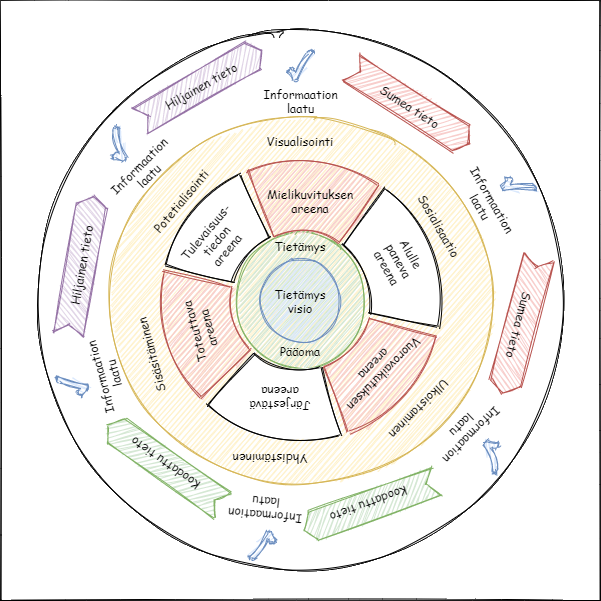
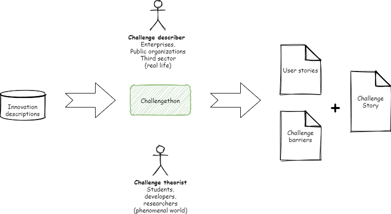
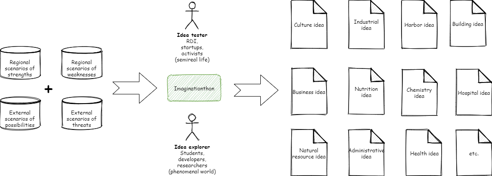

Avoin kehittämismalli
(Mikä se on?)
Mitä tehokkaammin innovaatioverkosto toimii, sitä enemmän se kykenee tuottamaan haluttuja innovaatioita. Tehokkuuden lisäys verkostossa vaatii sekä toiminnnan orkestrointia, että toiminnan rakenteet. (Dhanaraj & Parkhe 2006) Dhanaraj C. & Parkhe A. (2006) Orchestrating Innovation Networks. Academy of Management Review 2006, Vol 31. No. 3, p.659-669
Ammattikorkeakoulujen tutkimus-, kehittämis- ja innovaatiotoiminnan pääpainopiste on soveltavassa tutkimus- ja kehitystyössä. Ammattikorkeakoulut harjoittavat opetusta palvelevaa sekä työelämää ja aluekehitystä tukevaa, alueen elinkeinorakennetta uudistavaa soveltavaa tutkimus-, kehittämis- ja innovaatiotoimintaa sekä taiteellista toimintaa. (Opetus- ja kulttuuriministeriö)
Keskeinen innovaatiokyvykkyyttä selittävä tekijä on verkostojen eri osapuolten välisten yhteyksien lisääntyminen. Mark Granovetter esitti teorian siitä, että verkostossa olevat heikot linkit muodostavat yhteyksiä niihin maailman osiin, joihin ei olisi muuten pääsyä. (Mark Granovetter 1973) Granovetter M. S. (1973) The strength of weak ties. The American Journal of Sociology, Vol. 78, No. 6. (May, 1973), p.1360-1380.
Ammattikorkeakoulujen vastuulla onkin toimia käytännön innovaatioiden ja tutkimuksen rajapinnassa. Käytännössä tämä soveltava tutkimus- ja kehitystyö rakentaa siltoja erilaisten tietämysten välille. Hyvin usein tämä silta jää rakentamatta ja tietämys potentiaalisesta innovaatiosta ei saavuta selaisia osapuolia, jotka kykenevät realisoimaan innovaation. Avoin kehittämismalli on suunniteltu helpottamaan erilaisten tietämysten käsittelyä, muuntamista ja siirtämistä avoimessa verkostossa.
Avoimen kehittämismallin taustalla tietämyksen luomisen reikäleipämalli. (Harmaakorpi & Melkas 2005) Harmaakorpi, V. & Melkas, H., 2005. Knowledge Management in Regional Innovation Networks: The Case of Lahti, Finland. European Planning Studies, Issue Vol. 13, No. 5, pp. 641-659. Reikäleipämallissa on kuusi erilaista tiedon käsittelyn areenaa, joissa tietoa pyritään käsittelemään siten, että lisäisi osapuolten ymmärtämystä käsiteltävästä tiedosta ja siten mahdollistaisi tiedon siirtämisen. Alla olevassa kuvassa on reikäleipämallin visialisointi. Mallissa tieto on jaettu kolmeen eri kateroriaan: koodattu tieto, hiljainen tieto ja sumea tieto. Tämä kategorisointi on tärkee, koska erilaisten tietotyyppien käsittely, muuntaminen ja siirtäminen vaatii erilaisia tapoja.
Reikäleipämallissa tietoa käsitellään kuudessa eri areenassa, joista kolmessa (Mielikuvituksen areena, Vuorovaikutuksen areena ja Toteuttava areena) tiedon kategoria muuttuu. Tämä tarkoittaa sitä, että käsittelyn alussa areenalle tuleva tieto on erilaista kuin käsittelyn lopussa. Tiedon muuntaminen on tärkeää, koska se mahdollistaa verkostossa olevien osapuolten tiedollisten etäisyyksien välisen kuilun kaventumisen. Tämän johdosta eri osapuolille alkaa syntymään yhteyksiä sellaisiin maailman osiin, joihin heillä ei olisi muuten pääsyä. Kolme muuta areenaa (tulevaisuustiedon areena, alullepaneva areena ja järjestävä areena) lisäävät ymmärtämystä käsiteltävästä tiedosta.
Avoin kehittämismalli on mukautettu käytännön implementaatio reikäleipämallista ammattikorkeakoulujen käyttöön. Siinä yhdistyy tiedon käsittelyn, muuntamisen ja siirtämisen rakenteet koko toimintaa ohjaavaan orkestrointiin.
Avoimessa kehittämismalli perustuu säännöllisesti toistuviin tapahtumiin, jotka muistuttavat ketteristä kehitysmenetelmistä tuttuja sprinttejä. Ajatuksena on, että jokainen tapahtuma tuottaa "valmiin" kuvauksen, jota voidaan käyttää uusien tapahtumien lähtötietona tai vaikka uuden innovaation suunnitelmana. Tärkeää onkin, että jokainen tapahtuma tuottaa käyttökelpoista tietoa, jatkoa varten.
Tapahtumat seuraavat toisiaan, jolloin syntyy jatkuvasti pyörivä kehä. Taustalla on reikäleipämallin ajatus siitä, että tieto muuttaa muotoaan ja jalostuu jokaisessa tapahtumassa. Toiminta avoimen kehittämismallin tapahtumissa muistuttaa hacakathoneja, jonka johdosta tapahtumia kutsutaankin kutsutaan thoneiksi. (hackathon).
Thoni:
- Tavoitteena on kehittää tietoa.
- Tulokset ovat kuvauksia:
- Käytännön haasteista
- Tulevaisuuden mahdollisuuksista
- Täydellisistä ratkaisuista
- Realistisista ratkaisuista
- Käytännön toiminnallisuudesta
- Innovaatiosuunnitelmia
- Tapahtuman kesto voi olla muutamasta tunnista muutamaan päivään.
- Tapahtumat ovat rentoja ja epämuodollisia.
- Osallistujat saavat toimia itselleen luotaisessa roolissa:
- Haasteen(tiedon) omistaja
- Haasteen(tiedon) ratkaisija
- Haasteen(tiedon) jalostaja
- Haasteen(tiedon) rikastuttaja
Challengethon
Uuden tiedon sisäistäminen tarkoittaa koodatun tiedon muuntamista hiljaiseksi tiedoksi. Tässä vaiheessa koodatun tiedon on ilmennyttävä toimintana tai käytäntöinä simulaatioiden tai kokeilujen kautta. Toteuttava areena helpottaa koodatun tiedon muuntamista hiljaiseksi tiedoksi. Sisäistämistä johdetaan usein asiantuntevien kouluttajien toteuttaman ja jatkuvaa harjoittelua sisältävän täsmäkoulutuksen avulla.
(Koivula & ym. 2014)
Tutkimus ja arki kohtaavat
Koivula, Marja; Melkas, Helinä; Laakso, Hilkka; Rantala, Tero; Rinkinen, Satu; Hennala, Lea; Hovén, Kristina; Jokela, Merja; Kirjonen, Irene; Laihanen, Annu; Hyypiä, Mirva; Parjanen, Satu; Uotila, Tuomo; Artima-Sulkinoja, Essi; Khan, Rakhshand; Kallio, Anne; Mäkimattila, Martti; Pekkarinen, Satu; Saunila, Minna (2014)
Challengethonissa kuvataan koodattua tietoa käytännön haasteista. Haasteisiin pyritään lisäämään uusia näkökulmia esimerkiksi oppilaiden avulla. Yrityksen tai muun organisaation haasteena voi olla esimerkiksi se, että heillä olisi uusi palveluinnovaatio, mutta toteuttamisen esteenä on ihmisten yksityisyys. Yrityksen tehtävänä on kuvata uusi innovaatio mahdollisimman monesta eri näkökulmasta. Oppilaiden tehtävä on kuvata esteet mahdollisimman tarkasti(esteenä voi olla esim. lainsäädäntö).
Lopputuloksena on kuvaus(haasteen tarina), jossa on kolme osaa. Ensimmäisestä osasta vastaa haasteen kuvaaja(esim. yritys), joka tuottaa haasteeseen liittyvät käyttäjätarinat. Toisesta osasta vastaa haasteen teoretisoija(esim. oppilaat), jotka tuottavat haasteeseen liittyvinen esteiden tarkoista kuvauksista. Viimeinen osa on kaikkien osapuolten yhdessä tuottama yhteenveto haasteesta, jossa voi jo olla "ituja" siitä, kuinka haastetta voidaan lähteä ratkaisemaan.
Futurethon
Futurethonissa tavoitteena on jalostaa haasteiden tarinoita ja esteitä tulevaisuuden skenaarioilla. Lähtökohta on poimia challengethonien tarinoita ja rakentaa uskottavia tulevaisuusskenaarioita tarinoiden ympärille. Futurethonissa pystään hyvin lähellä chalengethonin tarinoita, mikä tarkoittaa sitä, että tämän thonin skenaarioissa ei lähdetä maalailemaan mahdollisuuksien maailmoja. Tämän thonin lopputuotteena on kuvaus(tarinoiden skenaariot), jossa tarinat ja esteet jakaantuvat neljään eri osaan:
-
Tarinoiden skenaariot
-
Vahvuuksien alueelliset skenaariot
- Osaaminen ja osaamisen kehittyminen
- Palvelut
- Verkostot, yhdessä tekemisen tahtotila (luottamus ihmisiin)
- Yhteiset informaatioalustat?
-
Mahdollisuuksien ulkoiset skenaariot
- Monialaisen yhteistyön mahdollisuudet
- Kansallisen osaamisen kehittyminen
- Etäajattelun kehittyminen (virtuaalisuuden
- Kestävät mahdollisuudet
- Digitalisaation mahdollistama asioiden nopea levittäminen ja vaikuttaminen
-
Vahvuuksien alueelliset skenaariot
-
Esteiden skenaariot
-
Heikkouksien alueelliset skenaariot
- Tutkimus- ja kehitystoiminnan pirstaloituminen
- Tarvittavien resurssien tavoittaminen
- Toimintatapojen muuttaminen
- Hanketoiminnan lyhytjänteisyys
-
Uhkien ulkoiset skenaariot
- Informaation määrä kasvaa nopeammin kuin sen sisäistäminen (asioiden ymmärtämisen vaikeus)
- Erilaiset kohtaanto-ongelmat(aika, paikka, tieto, yms.)
- Teknologinen epätasa-arvo
- liiketoimintojen arvonluontiketjujen muutokset
-
Heikkouksien alueelliset skenaariot
Lopputuloksena on tulevaisuuden kuvaus(skenaariot), joka muodostuu viidestä eri näkökulmasta. Sekenaariot pohjautuvat challengethonin tuotoksiin, joihin lisätään alueellisten vahvuuksien ja heikkouksien näkökulma, sekä ulkoisten mahdollisuuksien ja uhkien näkökulma. Skenaarioiden työstämiseen osallistuu kaksi rooli, joista tulevaisuuden mahdollistajat(esim. yritykset) liittävät skenaariot reaali maailmaan ja tulevaisuuden teoretisoijat(esim. opiskelijat) tarkastelevat skenaarioita ilmiöiden maailmojen kautta. Futurethonin skenaariot nojaavat olemassa oleviin rakenteisiin, jotta alkuperäisten haasteiden ratkaisu voisi perustua inkrementaalisiin parannuksiin.
Imaginationthon
Innovaatiot voidaan jakaa myös asteittaisiin\inkrementaalisiin (nykyisten tuotteiden, palveluiden ja toimintamallien parannukset) ja radikaaleihin (luovat uusia markkinoita ja pakottavat muuttamaan ajattelua) (Wikipedia). Imaginationthonissa luodaan pohjaa radikaaleille innovaatioille. Jotta radikaaleille innovaatioille löytyisi polttoainettta täytyy futurethonin skenaarioihin etsiä uusia näkökulmia. Imaginationthonissa uusia näkökulmia etsitään monitieteellisyyden ja monialaisuuden kautta. Ammattikorkeakouluissa monitieteellisyys on luonnollinen osa eri opetus aloja. Moniala-alaisuuus näkyy ammattikorkeakoulujen käynnissä olevissa tki-hankeissa ja menneissä tki-hankkeissa. On myös tärkeää, että kohtaa avointa kehittämismallia alkuperäinen haasteen kuvaaja (challengethon) ei osallistu tähän thoniin, jotta skenaariot pystyvät laajentuvat mahdollisimman ennakkoluulottomasti tutkimattomille alueille.
Imaginationthonin lopputuotteena on ideoita, jota perustuvat futurethonin skenaarioihin ja jakaantuvat monitieteellisesti ja monialaisesti laidasta laitaa. Tässä kohtaa avointa kehittämismallia pyritään saamaan aikaiseksi mahdollisimman laaja tuotosten(ideoiden) määrä.
Solutionthon
Avoimen kehittämismallin aikaisemmissa thoneissa ollaa tuotosten laadun sijasta keskitytty tuotosten määrään. Solutionthon aloittaa tuotosten laadullisen lähestymisen. Tavoitteena rakentaa haasteista, käyttäjätarinoista, skenaarioista, esteistä, vahvuuksista, heikkouksista, mahdollisuuksista, uhista ja ideoista realistisia ratkaisuja, joiden toimivuutta voidaan myöhemmin kokeilla. Jotta aikaisemmissa thoneissa tuotettua tietoa pystytään hyödyntämään on tärkeää, että kaikki tuotokset ovat tietomallirakenteessa, joka tarjoaa näkymän polkuihin, jotka johtavat tiedon alkulähteille ja solmukohtiin, jotka haarauttavat ja yhdistävät tietoja toisiinsa.

Tietojen väliset yhteydet ovat rakenteita, joiden avulla eri osapuolet näkevät kokonaisvaltaisesti, millaisista pienistä puroista ratkaisut ovat syntyneet. Solutionthonissa lopputuotteena syntyy kuvauksia ratakisuista, jotka pitävät sisällään:
-
Tarinoiden skenaariot
-
Vahvuuksien alueelliset skenaariot
- Osaaminen ja osaamisen kehittyminen
- Palvelut
- Verkostot, yhdessä tekemisen tahtotila (luottamus ihmisiin)
- Yhteiset informaatioalustat?
-
Vahvuuksien alueelliset skenaariot